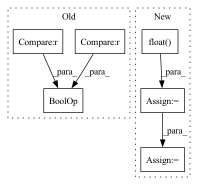

Pattern ID :4392
Before Change
final_target_logit = torch.where(
target_logit > self.th, cos_theta_m, target_logit - self.mm
)
if cfg["USE_AMP"] == True and cfg["OPT_LEVEL"] == "O1" :
final_target_logit = final_target_logit.half()
cos_theta.scatter_(1, label.view(-1, 1).long(), final_target_logit)
output = cos_theta * self.sAfter Change
is_half = cos_theta.dtype == torch.float16
cos_theta_m = torch.where(
cos_theta > self.min_cos_theta, cos_theta_m, cos_theta.float() - self.m_am,
)
if is_half:
cos_theta_m = cos_theta_m.half()
index = torch.zeros_like(cos_theta)
index.scatter_(1, label.data.view(-1, 1), 1)
index = index.byte().bool()
output = cos_theta * 1.0
output[index] = cos_theta_m[index]
output *= self.s
return output
In pattern: SUPERPATTERN
Frequency: 4
Non-data size: 6
Instances Fragment ID: 16174580
Project Name: cavalleria/cavaface
Commit Name: 98a21048f5dce435a6639a288dafc4c6be61be05
Time: 2021-08-25
Author: 605370459@qq.com
File Name: head/metrics.py
M Class Name: ArcFace
N Class Name: ArcFace
M Method Name: forward(3)
N Method Name: forward(3)
M Parent Class: nn.Module
N Parent Class: nn.Module
M File Name: head/metrics.py
N File Name: head/metrics.py
M Start Line: 81
M End Line: 103
N Start Line: 67
N End Line: 86
Before Change
out = torch.cat((out, sample), dim=-1)
if eos_token is not None and (sample == eos_token).all() :
break
out = out[:, t:]After Change
if is_eos_token.any(dim = -1).all():
// mask out everything after the eos tokens
shifted_is_eos_tokens = F.pad(is_eos_tokens, (1, -1))
mask = shifted_is_eos_tokens.float() .cumsum(dim = -1) >= 1
out = out.masked_fill(mask, self.pad_value)
break
out = out[:, t:] Fragment ID: 16174566
Project Name: lucidrains/h-transformer-1d
Commit Name: e3cb1afee7a1c8895180d89aa3a9c51ef42c8d3a
Time: 2021-08-08
Author: lucidrains@gmail.com
File Name: h_transformer_1d/autoregressive_wrapper.py
M Class Name: AutoregressiveWrapper
N Class Name: AutoregressiveWrapper
M Method Name: generate(7)
N Method Name: generate(7)
M Parent Class: nn.Module
N Parent Class: nn.Module
M File Name: h_transformer_1d/autoregressive_wrapper.py
N File Name: h_transformer_1d/autoregressive_wrapper.py
M Start Line: 55
M End Line: 60
N Start Line: 60
N End Line: 72
Before Change
return 0
def is_valid_crop(self, ds_item_dict):
if ds_item_dict["class_freq"][0] == 1 and ds_item_dict["class_freq"][1] == 0 and ds_item_dict["class_freq"][2] == 0 :
return False
return True
After Change
return 0
def is_valid_crop(self, ds_item_dict):
gt_polygons_mask = (0 < ds_item_dict["gt_polygons_image"]).float()
background_freq = 1 - torch.sum(ds_item_dict["class_freq"], dim=0)
pixel_class_freq = gt_polygons_mask * ds_item_dict["class_freq"][ :, None, None] + \
(1 - gt_polygons_mask) * background_freq[None, None, None]
if pixel_class_freq.min() == 0 or ("sizes" in ds_item_dict and ds_item_dict["sizes"].min() == 0):
return False Fragment ID: 16174576
Project Name: dsgoficial/pytorch_segmentation_models_trainer
Commit Name: 39ff21b3d7e72f48b4ea42597d381d294b60bf82
Time: 2021-06-24
Author: philipeborba@gmail.com
File Name: pytorch_segmentation_models_trainer/dataset_loader/dataset.py
M Class Name: FrameFieldSegmentationDataset
N Class Name: FrameFieldSegmentationDataset
M Method Name: is_valid_crop(2)
N Method Name: is_valid_crop(2)
M Parent Class: SegmentationDataset
N Parent Class: SegmentationDataset
M File Name: pytorch_segmentation_models_trainer/dataset_loader/dataset.py
N File Name: pytorch_segmentation_models_trainer/dataset_loader/dataset.py
M Start Line: 192
M End Line: 192
N Start Line: 192
N End Line: 196
Before Change
out = torch.cat((out, sample), dim=-1)
mask = F.pad(mask, (0, 1), value=True)
if eos_token is not None and (sample == eos_token).all() :
break
out = out[:, t:]After Change
if is_eos_token.any(dim = -1).all():
// mask out everything after the eos tokens
shifted_is_eos_tokens = F.pad(is_eos_tokens, (1, -1))
mask = shifted_is_eos_tokens.float() .cumsum(dim = -1) >= 1
out = out.masked_fill(mask, self.pad_value)
break
out = out[:, t:] Fragment ID: 16174572
Project Name: lucidrains/x-transformers
Commit Name: b32913eeb4fe332ee366e455f7214fc08c9a2aa6
Time: 2021-08-10
Author: lucidrains@gmail.com
File Name: x_transformers/autoregressive_wrapper.py
M Class Name: AutoregressiveWrapper
N Class Name: AutoregressiveWrapper
M Method Name: generate(7)
N Method Name: generate(7)
M Parent Class: nn.Module
N Parent Class: nn.Module
M File Name: x_transformers/autoregressive_wrapper.py
N File Name: x_transformers/autoregressive_wrapper.py
M Start Line: 75
M End Line: 81
N Start Line: 80
N End Line: 93